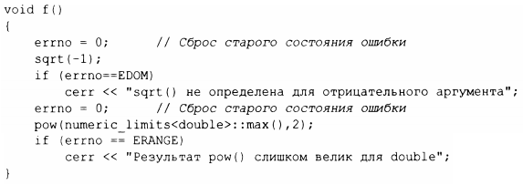

⇐14.1 Введение 14.3 Числовые алгоритмы⇒
В заголовочном файле <cmath> находятся стандартные .математические функции, такие как sqrt (), log () или sin () для аргументов типов float, double и long double.
| Стандартные математические функции | |
|---|---|
| abs(x) | Абсолютное значение |
| ceil(х) | Наименьшее целое, не меньшее х |
| floor(х) | Наибольшее целое, не большее х |
| sqrt(x) | Квадратный корень; значение х должно быть неотрицательным |
| cos(x) | Косинус |
| sin(x) | Синус |
| tan(x) | Тангенс |
| acos(x) | Арккосинус; результат неотрицателен |
| asin(x) | Арксинус; возвращается результат, ближайший к нулю |
| atan(x) | Арктангенс |
| cosh(x) | Гиперболический косинус |
| sinh(x) | Гиперболический синус |
| tanh(x) | Гиперболический тангенс |
| ехр(х) | Экспонента (е в степени х) |
| log(x) | Натуральный логарифм (по основанию е); значение х должно быть положительным |
| loglO(x) | Десятичный логарифм |
Версии функций для типа complex (§14.4) находятся в заголовочном файле <complex>. Для каждой функции возвращаемый тип совпадает с типом аргумента.
Об ошибках сообщается путем установки errno из заголовочного файла <cerrno> в EDOM для ошибки области определения и ERANGE - для ошибки области значений. Например:
Еще несколько математических функций находятся в заголовочном файле <cstdlib>, а так называемые специаr1ьные мате.wатические функции, такие как beta (), rieman zeta () и sph bessel (), также находятся в заголовочном файле <cmath>.